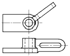
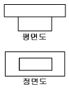
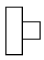
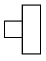
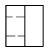
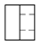
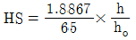
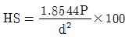
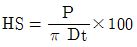
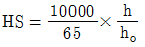

금속재료시험기능사 (2004-10-10 기출문제)
1과목: 금속재료일반
1. 완전풀림상태에서 금속결정내의 전위밀도로 맞는 것은?
- 102/cm2
- 107/cm2
- 1015/cm2
- 1019/cm2
(정답률: 59%)

2. 실온 이하에서 재결정이 되는 금속은?
- Cu
- Aℓ
- Mg
- Sn
(정답률: 58%)
3. 동소변태의 설명 중 옳지 않은 것은?
- 일정한 온도에서 일어남
- 급격히 일어남
- 비연속적임
- 점진적이고 연속적임
(정답률: 59%)
4. 금속의 결정격자구조가 아닌 것은?
- FCC
- CDB
- BCC
- HCP
(정답률: 96%)
5. 금속의 비열이란?
- 1 g의 물질의 온도를 1℃ 높이는데 필요한 열량
- 1 ㎏의 물질의 온도를 1℃ 높이는데 필요한 열량
- 금속 1 g을 용해시키는데 필요한 열량
- 금속 1 ㎏을 용해시키는데 필요한 열량
(정답률: 85%)
6. 다음 중 연하고 점성이 가장 높은 조직은?
- 페라이트
- 펄라이트
- 시멘타이트
- 마텐자이트
(정답률: 70%)
7. 보통 주철에서 흑연이 어떤 모양일 때 강도를 가장 해치게 되는가?
- 커다란 편상흑연
- 작은 편상흑연
- 둥근 구상흑연
- 미세한 편상흑연
(정답률: 53%)
8. 절삭공구용으로 사용되고 있는 18 - 4 - 1형 고속도 공구강의 주성분은?
- 텅스텐 - 몰리브덴 - 아연
- 텅스텐 - 바나듐 - 베리윰
- 텅스텐 - 크롬 - 바나듐
- 텅스텐 - 알루미늄 - 코발트
(정답률: 79%)
9. 칠드 주철(chilled cast iron)을 가장 잘 표현한 것은?
- 연신성이 좋은 주철
- 전연성이 좋은 주철
- 내마모성이 좋은 주철
- 메짐성이 좋은 주철
(정답률: 54%)
10. 질화용강의 성분에 속하지 않는 것은?
- Cu
- Aℓ
- Cr
- Mo
(정답률: 35%)
11. 황동의 주요 합금원소는?
- Cu - Zn
- Cu - Ni
- Cu - Pb
- Cu - Sn
(정답률: 92%)
12. 켈멧(Kelmet)의 주성분은?
- 구리와 납
- 철과 아연
- 주석과 알루미늄
- 실리콘과 코발트
(정답률: 74%)
13. 활자 합금의 주성분으로 맞는 것은?
- 백금 - 은 - 구리
- 납 - 주석 - 안티몬
- 황 - 주석 - 아연
- 인 - 주석 - 니켈
(정답률: 42%)
14. 공석강의 조직은?
- 시멘타이트
- 오스테나이트
- 펄라이트
- 레데뷰라이트
(정답률: 56%)
15. α 철의 자기변태를 나타내는 기호는?
- A1
- A2
- A3
- A4
(정답률: 75%)
16. 제도용지 A4 의 크기는?
- 210 × 297
- 420 × 594
- 841 × 1189
- 148 × 210
(정답률: 82%)
17. 물체의 보이지 않는 부분의 형상을 나타내는 선은?
- 실선
- 파선
- 일점 쇄선
- 이점 쇄선
(정답률: 69%)
18. 제도 도면에서 반지름 치수를 나타내는 기호는?
- R
- t
- P
- C
(정답률: 87%)
19. 제도에서 가상선을 사용하는 경우가 아닌 것은?
- 인접 부분을 참고로 표시하는 경우
- 공구, 지그 등의 위치를 참고로 나타내는 경우
- 물체의 단면 형상임을 표시하는 경우
- 되풀이 하는 것을 나타내는 경우
(정답률: 55%)
20. 다음 그림과 같이 평면도상에서 어떤 각도를 가지는 암을 정면도에서는 회전시켜 실제 크기로 나타내는 도시법은?

- 전개 도시법
- 가상 도시법
- 부분투상 도시법
- 회전 도시법
(정답률: 84%)
2과목: 금속제도
21. 정투상도법에서 물체의 특징을 가장 잘 나타내는 면은 어느 투상도로 하는가?
- 평면도
- 측면도
- 정면도
- 하면도
(정답률: 71%)
22. 물체의 일부만을 절단하여 그 단면의 모양이나 크기를 표시하는 단면도는?
- 온단면도
- 한쪽단면도
- 부분단면도
- 계단단면도
(정답률: 70%)
23. 기준치수와 IT 공차등급이 동일한 축 중 직경이 가장 큰 축의 기호는?
- a
- h
- t
- z
(정답률: 34%)
24. 호칭치수 30 mm, 피치 3 mm 인 미터계 사다리꼴 나사의 표시는?
- T M 30 × 3
- T W 30 - 3
- P 3 × T 30
- M 30 × 3
(정답률: 54%)
25. SS 330 으로 표시된 재료기호에서 330 이 뜻하는 것은?
- 재질 번호
- 재질 등급
- 탄소 함유량
- 최저 인장강도
(정답률: 67%)
26. 도면의 치수 기입 원칙에 대한 설명으로 틀린 것은?
- 치수는 되도록 주 투상도에 집중시킨다.
- 도면에 표시하는 치수는 소재의 치수로 표시한다.
- 치수는 중복 기입을 피한다.
- 관련되는 치수는 되도록 한 곳에 모아서 기입한다.
(정답률: 62%)
27. 다음의 투상도에서 우측면도를 나타낸 것은?





(정답률: 71%)
28. 다음중 강에서 가장 유해한 불순물은?
- 황(S)
- 망간(Mn)
- 규소(Si)
- 구리(Cu)
(정답률: 71%)
29. 탄소강에서 질량효과(mass effect)에 가장 큰 영향을 미치는 것은?
- 재료의 균열
- 공기냉각
- 강재의 담금질성
- 가열로의 크기
(정답률: 69%)
30. 강이 오스테나이트 결정입도 시험방법에서 입도라 함은?
- 오스테나이트 결정립의 숫자
- 오스테나이트 결정립의 단면적
- 오스테나이트 결정립의 크기를 말하며 이것을 입도 번호로 나타낸다.
- 오스테나이트 결정립의 길이
(정답률: 48%)
31. 강의 현미경 조직 시험과정에서 미세연마할 때 가장 많이 사용되는 연마제는?
- 산화알루미늄분말
- 이산화망간 분말
- 규조토 분말
- 석회석 분말
(정답률: 57%)
32. 기호 AGC는 무엇을 의미하는가?
- 침탄입도시험방법
- 경화능시험방법
- 산화방지법
- 담금질, 풀림방법
(정답률: 44%)
33. 파단면 검사법으로 알 수 없는 것은?
- 파괴의 원인
- 열처리 균열
- 결정입도측정
- 피로 파단면
(정답률: 48%)
34. 탄소강의 결정경계의 부식에 가장 적당한 것은?
- 피크린산15% 의 알콜용액
- 질산 1-5% +알콜용액
- 피크린산 12g +가성소오다 5g 수용액
- 염산 5% 수용액
(정답률: 40%)
35. 설퍼 프린트에 대한 올바른 설명은?
- 철강 재료 중의 황의 양 및 분포 상태를 알 수 있다.
- 철강 재료 중 철 및 망간의 분포상태를 알 수 있다.
- 구리 및 알루미늄의 결정 조직 상태를 알 수 있다
- 구리 및 알루미늄의 입간부식을 알수있다.
(정답률: 72%)
36. 금속조직 시험에서 철강용 부식액으로 사용되는 것은?
- 염화 제2철 용액
- 피크린산 알콜 용액
- 질산
- 왕수
(정답률: 42%)
37. 강의 매크로조직 시험에서 중심부 파열이란 어느 것을 의미하는가?
- 부적당한 단조 또는 압연작업으로 인하여 중심부에 파열이 생긴것
- 주변기포에 의한 흠의 영향으로 강재의 중심부에 파열이 생긴것
- 부식에 의하여 단면에 미세하게 모발상으로 나타난 흠
- 강의 응고수축에 따른 파이프가 중심부에 그 흔적을 남긴것
(정답률: 36%)
38. X선 회절에 적용되는 법칙은?
- 멘델의 법칙
- 브래그의 법칙
- 시버츠의 법칙
- 뉴턴의 법칙
(정답률: 45%)
39. 다음의 재질들 중 인장시험 했을 때 항복점이 가장 뚜렷이 나타나는 것은?
- 황동
- 알루미늄
- 아연
- 연강
(정답률: 58%)
40. 봉(bar)의 인장시험에 적합한 KS 규격의 시험편으로 옳은 것은?
- 1호시험편
- 4호시험편
- 5호시험편
- 7호시험편
(정답률: 64%)
3과목: 금속재료조직 및 비파괴시험
41. 충격시험과 관련이 없는 것은?
- 영률
- 노치
- 흡수 에너지
- 각도
(정답률: 62%)
42. 피로시험에서 S-N 곡선이란?
- 파괴와 응력
- 스트레인과 노치횟수
- 온도와 성분
- 피로응력과 반복횟수
(정답률: 89%)
43. 강구 압입자에 일정한 하중(kg)을 가하여 나타나는 시험 흔적의 평균 표면적 A(mm2)의 단위 면적당 응력으로 나타내는 것은?
- 충격시험
- 인장시험
- 브리넬 경도시험
- 쇼어 경도시험
(정답률: 70%)
44. 비커스 경도의 계산식은?
- HV = 1.8544 × P
- HV = (1.8544 P)/d2
- HV = 1.8544 × d2
- HV = 1.8544 × P × d2
(정답률: 51%)
45. 쇼어 경도시험의 공식은?




(정답률: 48%)
46. 재료의 경도측정 방법이 아닌 것은?
- 압입시험
- 마멸시험
- 반동시험
- 긁힘시험
(정답률: 44%)
47. 방사선 투과 시험시 가장 많이 쓰는 Co60의 반감기는?
- 74일
- 2.3년
- 5.3년
- 6.8년
(정답률: 43%)
48. 커다란 균열이 있는 시편에 대해 방사선 투과검사 수행을 할 때 이 균열은 투과사진상에 어떻게 나타나는가?
- 검고 단속적 또는 계속적인 선으로
- 밝고 불규칙한 선으로
- 검거나 또는 밝은 선으로
- 투과사진상에 안개낀 형상으로
(정답률: 33%)
49. 다음 중 초음파의 종류가 아닌 것은?
- 전자파
- 횡파
- 표면파
- 판파
(정답률: 47%)
50. 초음파 시험법이 아닌 것은?
- 펄스 반사법
- 죠미니법
- 투과법
- 공진법
(정답률: 75%)
51. 자분탐상 시험에 일반적으로 적용할 수 없는 것은?
- 강자성체의 표면결함
- 결함의 위치
- 결함이 일어난 표면상의 길이
- 10mm 이상 내부결함의 검출
(정답률: 61%)
52. 필름현상, 정착, 정지 등의 기능이 필요한 비파괴시험은?
- 방사선투과시험
- 공진초음파탐사
- 수세성침투시험
- 와전류탐상
(정답률: 72%)
53. 유류 화재시 부적당한 소화 설비는?
- 물
- 모래
- 가마니
- 이산화탄소
(정답률: 63%)
54. 불꽃시험용 연삭기를 사용하여 강재를 판별할 때 반드시 지켜야 할 안전사항이 아닌 것은?
- 보호안경을 반드시 써야 한다.
- 불꽃시험은 숫돌의 정면에 서서한다.
- 숫돌을 교환 했을 때는 3분정도 시운전을 한다.
- 연삭숫돌의 부시는 숫돌에 밀착 되도록 설치한다.
(정답률: 67%)
55. 안전수칙을 제대로 지켜 사고를 예방할 수 있는 근로자는 구인가?
- 자신의 기능을 너무 믿는 사람
- 겉으로만 지키는척 하는 사람
- 사소한 행동에도 소홀하지 않는 사람
- 주위가 산만한 사람
(정답률: 74%)
56. 금속의 조직검사시 현미경 사용방법 중 틀린 것은?
- 렌즈는 데시케이터에 넣어 보관한다.
- 현미경 보관시에는 덮개를 씌운다.
- 처음에는 고배율에서 측정하고 다음에 저배율에서 넓은 범위를 관찰한다.
- 현미경 렌즈를 손으로 만져서는 안된다.
(정답률: 75%)
57. 시험편을 옮길 때 손으로 잡아서는 곤란한 것은?
- 마멸시험
- 인장시험
- 충격시험
- 피로시험
(정답률: 62%)
58. 재료의 소성 가공성을 시험하기 위한 것은?
- 굽힘 시험
- 경화층 시험
- 비틀림 시험
- 크리프 시험
(정답률: 40%)
59. 형광 침투탐상 시험으로 검사가 가장 용이한 것은?
- 표면균열
- 편석
- 내부기공
- 내부결정
(정답률: 60%)
60. 미소경도시험을 하는 경우가 아닌 것은?
- 시험편이 크고 경도가 낮은 부분 측정
- 박판 또는 가는 선재의 경도 측정
- 금속 재료의 조직 경도 측정
- 절삭 공구의 날 부위 경도 측정
(정답률: 34%)